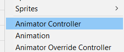
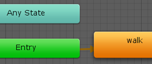

UNITY AUGMENTED REALITY APPLICATIONS
This site offers intro tutorials on making AR projects with Unity with Vuforia for Unity Apps, and with 360 Panoramas and recent Apple and Google mobile apps for the web.
Vuforia isa free plugin for Unity. It works on the most devices and is relatively simple to implement, so this tutorial focuses on Vuforia and Unity.
Unity's in-house system, ARfoundation, is a wrap around Google's ARcode (Android 8+) and Apple's ARkit (iOS 11+). It has more features but is more complicated to implement and does not work on older devices.
A mobile web application would circumvent the need for app distribution. Vuforia does not yet support webGL; see notes for Unity's AR Foundation, Apple's ARKit, Android's ARCode, and AR.js. |
|
VUFORIA allows us to create augmented reality experiences that work on most phones (even older phones that predate ARcode and ARkit). Vuforia was created by Quallcom and fully integrated into Unity in 2017. This tutorial covers basic steps for creating and building an Augmented Reality Unity Project for viewing through a camera-enabled computer or mobile device. This tutorial works on Unity 2019.4.10 and more recent versions.
Make sure the Android or iOS Module is installed in Unity Hub if you want to export a mobile build.
Typical Vuforia AR requires one or more Image Targets placed in the real world to control where holograms are appear. Three rules for each ImageTarget:
Be rich in detail: a simple square or circle is less effective than a block of text, and any black border should be surrounded by a white border.
Have good contrast, with light and dark regions throughout.Have no repeating patterns: be unique throughout (consider the text of a poem, or a random group of rocks).
|


VUFORIA LESSON 1: Setting up a Vuforia account, project license and database for a basic test (video sources: 01,
02)
Please note: Vuforia works for Mac or Windows 10+.
PART A: Vuforia Website
Preparations
1. SIGN UP: Go to the Vuforia website
to create a free account.
Remember your username and password!
Confirm through email and login to Vuforia.
Click the [My Account] tab for developer resources.
2. LICENSE KEY:
a) MAKE A KEY:
Click [Licenses] to open the License Manager.
Hit [Get Basic] for a free Development key.
Name it "FirstAR".
b) COPY YOUR KEY:
Click on the Key name you created in the list.
Note the block of text on a gray field.
Click the gray field to copy your Vuforia License Key (you will paste it into your Unity Vuforia Configuration file).
3. MAKE A TARGET (one or more images to reference):
a) Under [Target Manager] hit [Generate Database].
Give it a name, leave it as type = "Device"
(stores on your computer, allows varied target types).
Hit [Create].
b) Click your new "Database" in the list to enter it.
c) Hit [Add Target] to upload one or more images
(like this hiro image from the AR.js project).
Set size to 1 if big (normal), 0.15 if small (units are meters, like Unity).
Hit [Add].
NOTE: You do not need to wait for "processing" to complete, but when it does Vuforia will rate the quality of your image.
d) Hit [Download Database].
Choose Unity Editor.
Hit [Download Database] to
copy your Image Target Database to your desktop.
4. GET THE PLUGIN PACKAGE FOR UNITY:
a) Under the top Downloads tab, download the Unity add-vuforia-package.
b) Move it to your desktop or production folder so you can import it into Unity.
|
Click for full images

|
PART B: UNITY Vuforia Activation:
Open a Unity 3D project (last checked with Unity 2021.1.10):
1. INSTALL the Vuforia plugin package:
RightClick-hold the Project panel > Assets folder.
Choose Import Package > Custom Package,
On your computer, find and choose the downloaded add_vuforia_package.
PLEASE NOTE:
This may generate a console error, but Vuforia should still work!
This only installs Vuforia on this particular project and all of its Scenes. If you create a new Unity project, you would need to install Vuforia there, too, if you want that functionality.
2. ADD AN AR-CAMERA TO A SCENE:
RightClick-hold the Hierarchy of your Scene.
Choose Vuforia Engine > ARCamera (hit "Import" or "accept" the license agreement if asked).
This step is important-- it creates the Assets > Resources folder!
Delete the default MainCamera, above.
3. Open the Project > Assets > Resources folder to find the VuforiaConfiguration file.
a) ADD YOUR LICENSE KEY:
Select the VuforiaConfiguration file, and look in the Inspector.
Find the App License Key slot.
Paste your Vuforia License Key into it.
Hit [Add License].
b) ADD YOUR TARGET IMAGE DATABASE:
Import your downloaded Image Target Database Package into the Unity Project Assets folder:
RightClick in the Assets folder to choose Import Package.
To see the imported Target images:
Look in Assets > Editor > Vuforia > ImageTargetTextures
(will be called filename_scaled).
This database content is automatically added to the VuforiaConfiguration file:
select Assets > Resources > VuforiaConfiguration again to see the Database name listed under "Databases".
Multiple databases may be added, each with multiple image targets.
CHECK CAMERA SETTING:
With VuforiaConfiguration selected, scroll down to the bottom of the Inspector to be sure the camera is set to your computer camera (and not to something like Snap Camera or OBS).
|
OLD UNITY VERSION NOTES:
For Unity 2019.2.21:
Step 2. Enable Vuforia in Build Settings: File > Build Settings > PlayerSettings. Find XR Settings at the bottom, turn on Vuforia Augmented Reality. Close out of the Build Settings.(More recent versions of Unity skip this step, or only click on XR Plugin Management to install that).
For Unity 2019.3, download the SDK first.
For Unity 2020+, Vuforia is not included in the Package Manager. The Vuforia website has information for manual installation.
|
PART C: UNITY AR Content:
1. ADD IMAGE TARGET:
Now that our information is loaded:
RightClick in the Hierarchy to create a Vuforia > Image.
This will be labelled ImageTarget in the Hierarchy, and will come auto-loaded with your database image!
We can Rotate this image to get the desired orientation (Rotation X = 90 for an upright image), but please make sure all Position = 0 and all Scale = 1.
2. ADD 3D SWAP CONTENT:
Any GameObjects parented to this ImageTarget will appear when the AR app is played!
This includes 3D art or VFX, Unity Lights, 2D art or video, and any scripted interactions.
TO SWAP WITH A 2D IMAGE / VIDEO:
a) RightClick the ImageTarget, create 3D Object > Quad.
b) Rotate and Scale the Quad to match angle and position of the Target Image, as desired.
c) Import the desired replacement PNG image or MP4 video into the Project Assets folder. A PNG can be dropped directly onto the quad.
To use a video, select the Quad, and in the Inspector [Add Component] > Video Player, drag the MP4 video from the Assets folder to the VideoPlayer > Video Clip slot. Turn on Loop.
|

|
PART D: TO ADD AN ANIMATED 3D CHARACTER OR OBJECT:
In Autodesk Maya:
a) Make sure your character or object is located at world center (0,0,0).
Name all parts. Note that Unity units are meters and default Maya units are centimeters.
b) Animate your textured model using a joint rig or object transforms (for a basic walk cycle, try animating frames 10-40). Set timeslider from 1-to-animation end. NOTE: Blendshapes also work with Unity! Other Maya deformers do not, work in Unity, but can be faked with Bendshape copies of the animated deformer stages.
c) Export an FBX with these settings: turn on Animation, Baked Keyframes set from 1 to the end of your animation (for the above example, export 1-40).
In UNITY, import your animated FBX, prep the Clip and Controller:
a) RightClick Project > Assets folder to import FBX model and PNG texture.
b) Select the FBX and in Inspector open the Animation tab.
Set clip to desired range (10-40), set name to describe the action ("walk"), turn on "Loop" for continuous motion, and hit [Apply].
c) RightClick Project > Assets folder to Create an Animator Controller. Rename it per your FBX (in this example, "Character_Animator")
d) DoubleClick the Animator Controller to open the Animator panel, and see the Unity State Machine.
In the Assets folder open the FBX rolldown to find the triangular animaton clip you renamed (walk).
Drag the clip into the state machine. Because it is the first clip added, it becomes the default clip (turns orange. Additional clips could be accessed through scripts, but a single looping clip will start on Play and repeat).
Return to the Scene view.
Add the FBX to the Scene:
a) Drag the FBX from the Assets folder into the Hierarchy (appears in Scene).
In the Inspector set Position and Rotation transforms = 0, and Scale Transforms = 1.
Rename the mesh "[ObjectName]_art".
Drag the Animator Controller onto the FBX in the Hierarchy or Inspector, to add it as a Component.
NOTE: The animated mesh cannot be Transformed directly, as the animation information will overried the Scene transforms on runtime. Therefore, we need to parent it under another object that CAN be transformed:
b) Make the FBX mesh a child of an Empty GameObject:
Create a GameObject > Create Empty, rename it "AnimatedGO".
In the Inspector set Position and Rotation transforms = 0, and Scale Transforms = 1.
Drag the FBX onto AnimatedGO to parent the FBX beneath it.
We can now set the transforms on the AnimatedGO to set the Position, Rotation, and Scale for the child FBX mesh art!
c) RightClick the Assets folder to Create a Material.
Drag the PNG texture into the Albedo (color) slot, and drag the Material onto the FBX in the Hierarchy.
Optionally, turn on Emmision, drag the PNG into the Emmision slot, and click the HDR button to adjust the incandescene.
d) Drag the Character GO onto the Vuforia ImageTarget to make it a child.
This is critical: only content that is the child of the Vuforia ImageTarget will appear in the AR swap!
TESTING TIME!
Save your scene! Turn off any active cameras (like in Zoom).
Hit Play on your camera-enabled laptop.
Hold up a printed copy of the image target/s to see AR content appear.
|


|
VUFORIA LESSON 2: Occlusion allows AR holograms to feel more like they are part of the real world. Use Vuforia Depth Mask material to create an AR scene in a real-world object. Consider a "Book Nook" city alley, a world beneath your floor (include floor thickness!), or a torn-open torso (video source)
PART A: Vuforia Website
Preparations
1. SIGN UP (skip if you have ever done this already): Go to the Vuforia website
to create a free account. Remember your username and password!
Once you have confirmed through email and logged in, click the [Develop] tab.
2. LICENSE KEY:
a) MAKE A KEY (skip if you have ever done this already): Under [License Manager] hit [Get Development Key] to get a free key (name it "FirstAR").
b) COPY YOUR KEY (skip if you are creating a new Scene in the same Unity Project as lesson 1): Click the Key name you created, and copy the block of text that appears on the gray field (your Vuforia License Key).
3. MAKE A TARGET (one or more images to reference):
a) Under [Target Manager] hit [Add Database], name it (like "BookAlley"), leave it as "Device" (stores on your computer), hit [Create].
b) Click your new "Database" in the list to enter it.
c) Hit [Add Target] to upload one or more "Single Image" files (like these book alley targets: binding and top). Set size to 1, hit [Add].
d) Try adding a "Cuboid" for these two images to work together:
Width=3.5, Length =6.5, Height =9.5. Name "BookFull" and hit [Add].
Click "BookFull" cuboid to upload the images into Front and Top slots.
e) Back up at the Database level ("BookAlley"), hit [Download Database], choose Unity Editor, hit [Download] to copy your Image Target Database to your desktop.
NOTE: You do not need to wait for "processing" to complete, but when it does Vuforia will rate the quality of your image.
4. GET THE PLUGIN PACKAGE FOR UNITY:
a) Under the top Downloads tab, download the Unity add-vuforia-package.
b) Move it to your desktop or production folder so you can import it into Unity.
|
Download this PDF, print and cut out to tape to your AR Book Nook box:
height = 9.5"
width = 3.5"
depth = 6.5"
|
 |
Click for full images:
|
PART B: UNITY Vuforia Activation:
NOTE: If you already did Lesson 1, you do not need to do this Part B step again in the same Unity project, except to add the new Target Image Database (4b).
1. INSTALL the Vuforia plugin package:
RightClick the Project panel > Assets folder,
choose Import Package > Custom Package, and choose the downloaded add_vuforia_package.
This may generate a console error, but Vuforia should still work.
2. ADD AN AR-CAMERA TO A SCENE:
RightClick the Hierarchy of your Scene, choose Vuforia Engine > ARCamera (hit "Import" or "accept" the license agreement if asked).
This step is important-- it creates the Assets > Resources folder!
Delete the default MainCamera, above.
3. Open the Project > Assets > Resources folder to find the VuforiaConfiguration file.
a) ADD YOUR LICENSE KEY:
Select the VuforiaConfiguration file, and look in the Inspector.
Find the App License Key slot, and paste your Vuforia License Key into it.
Hit [Add License].
b) ADD YOUR TARGET IMAGE DATABASE:
Import your downloaded Image Target Database Package into the Unity Project Assets folder: RightClick in the Assets folder to choose Import Package.
To see the imported Target images, look in Assets > Editor > Vuforia > ImageTargetTextures (will be called filename_scaled).
This database content is automatically added to the VuforiaConfiguration file:
select Assets > Resources > VuforiaConfiguration again to see the Database name listed under "Databases".
Multiple databases may be added, each with multiple image targets.
CHECK CAMERA SETTING:
With VuforiaConfiguration selected, scroll down to the bottom of the Inspector to be sure the camera is set to your computer camera (and not to something like Snap Camera).
|
|
PART C: UNITY AR Content:
1. ADD IMAGE TARGET:
a) Now that our information is loaded, RightClick in the Hierarchy to create a Vuforia > Image (to attempt the Cuboid, choose Vuforia > Multi Image, but a simple ImageTarget is more reliable).
This will be labelled "ImageTarget" in the Hierarchy, and comes auto-loaded with your database, but you need to change some setting to display it:
In the Inspector set the ImageTarget to your Database and target: Find the Component called "Image Target Behavior", choose "From Database" and choose your image target.
If your Database includes multiple images, you can select the ImageTarget and in the Inspector switch between the images.
b) Rotate the ImageTarget: x = 90, y=0, and z = 180, to stand upright, facing front.
Please make sure to keep Transform Position = 0 and Transform Scale = 1.
2. ADD SWAP CONTENT:
a) In the Project panel Assets folder, import your city mesh FBX and texture/s PNG (try this sample city
FBX and
PNG).
b) Drag the FBX into the Hierarchy and onto the ImageTarget to make it a child. Scale and Move it just behind the ImageTarget. Optionally, also add GameObject > Light > Point Lights or Spot Lights to help illuminate the space, also parented to the ImageTarget..
c) RightClick the Assets panel to Create a new Material. Drag the texture PNG into the Albedo slot. Turn on Emission and drag the texture PNG into the Emission slot. Click HDR to lower the brightness a bit. Drag the material onto the City mesh in the Hierarchy.
d) Make a Sky: Create a GameObject > 3D Object > Plane. Name it "SkyPlane". Rotate and position to stand behind the city mesh. RightClick the Project > Assets panel to Create a new Material. In the Inspector click the Albedo color rectangle to make it bright blue. Turn on Emission and click HDR to set a bright blue color. Drag the material onto the SkyPlane in the Hierarchy.
|
|
3. CREATE OCCLUSION PLANES:
a) Create a GameObject > 3D Object > Plane. Name it "MaskPlane". Rotate it to face the same direction as the ImageTarget: x=180, y=0, z=-180. Scale it larger than the city, and move it to touch one side of the ImageTarget. Duplicate it and move the copies to surround the ImageTarget (4 total). Drag them onto the ImageTarget to make them children.
b) In the Project panel, open Packages > Vuforia > Materials to find the DepthMask material. Drag it onto the MaskPlanes to make them disappear, and hide all the content behind them.
Want to create a custom hole shape? Create a polygon mask and depth moel in Maya! Try these examples (pulled wood boards hole and wavy shape) or this circle-hole FBX.
TESTING TIME:
Save your scene! Turn off any active cameras (like in Zoom).
Hit Play on your camera-enabled laptop.
Hold up a printed copy of the image target/s to see AR content appear. Notice the scene only appears through the image-hole, and not around the sides!
|
|
4. INCLUDE AUDIO:
a) WAV files are good for effects, MP3 for music. Import into the project panel, then drag and drop the soudn file onto a new Empty Game Object in the Hierarccy. This creates an Audio Source component on the object.
b) Drag the empty GO onto the Image Target if you want it to play only when the target is live! In the Inspector you can set the looping.
|
|
VUFORIA LESSON 3: Grow your art into a dynamic, interactive experience!
How can a story be implied through the design of the setting? What motion and interactivity might you include to enhance the sense of time and place?
In Unity every element (GameObject) can get one or more scripts to make it act and be interactive. Start with animated meshes created in a 3D program (like Maya), then consider scripted options.
|
1. OBJECT SCRIPTED MOTION
Consider enhancing your scene with script-animated content:
Looping-in-Place Motion: object flapping or spinning in the wind like window shutters or a broken wheel, or a character with repeated performance, like running a shop, eating at a cafe, etc.
Moving Content: the occasional appearance of an elevated train or other vehicle passing through the scene in the background, or a passing-by character.
Here are FOUR BASIC SCRIPTS for GameObject motion (open the ZIP, move scripts to desktop, drag into Unity Assets folder, and drag onto Objects parented below the ImageTarget):
Texture Panning: Scrolls an image across a surface. Good for clouds moving through the sky, or flowing water. Import a JPEG or PNG image into the Assets folder. In the Inspector, set this image's Wrap Mode from "Clamp" to "Repeat", and hit [Apply]. RightClick Asset to Create > Material, and drag the image into the Albedo slot. Create a Game Object > 3D Object > Plane, drag the Material onto the plane. Add this script.)
Object Rotation: Rotates object around itself. Good for barber poles, windmills, wheels. Requires a RigidBody Component, set to isKinematic. Apply to an EmptyGO and parent an object to it to rotate around another object, like a bird around a mountain, or a bus that occasionally passes-by.)
Object Bob and Float: Motion to indicate a pick-up. Apply Rigidbody Component, set to isKinematic. Apply script.
FlickeringLight: A faulty streetlight or candlelight. Apply to a Unity light parented under the ImageTarget. Choose settings in the Inspector.
|
2. GAME INTERACTIVITY:
Consider a miniature Escape Room, where clicking on elements with your device allows them to be examined to answer questions in the UI, eventually switching the scene.
How about a game of Operation, carefully removing one element after another
Or try using multiple ImageTargets: adding a second target to shoot a cannon into your first, to eliminate an approaching threat.
Here are some links to try operations well-suited to an AR project
Character movement controller (6 min)
Character Following the Camera (25 min)
AR Shooting (15 min) and Turret (multiple videos)
Touch screen click to Select AR Objects (7 min)
Vuforia's Ground Plane Detection and Object Placement (5 min) and more details (44min)
Create AR Buttons (10 min)
another link (18 min)
Creating shapes out of multiple targets (17 min)
Vuforia's User-defined targets (25 min)
Play and control Audio in AR (20 min)
NOTE: Unity GameObjects can have any number of scripts. To make a new script, RightClick in the Assets folder to create a C# script, name it and hit [Enter]. Open in your prefered development program, like Visual Studio
|
EXPORTING TO MOBILE DEVICES:
While we can test our Vuforia projects using computer-cameras, here is how we export build files to mobile devices:
Exporting to Android devices. Creates an APK file which can be shared online and loaded directly onto Android phones (that may need to have developer mode activated).
Exporting to iOS devices.
Requires a Mac computer, with the most recent version of XCode.
NOTE: without a $100/year developer account, apps cannot be shared on multiple iOS devices.The only way to test is to build directly to an iOS device that is lightning-cord-tethered to your computer.
|
VUFORIA LESSON 4: NOTES ON MAKING 3D ART AND ANIMATION FOR UNITY
Not all functionality in your 3D package will work in Unity. Materials need to be simple and PNG-driven, and most effects need to be made in Unity, not your 3D package.
Please follow these guidelines (assumes Maya, but would be similar in any other 3D software):
|
1. 3D MODELING
Make each object a single mesh:
Either extrude the form from a single mesh or use Combine if the mesh is in multiple pieces (that are ot intended to be animated).
Example: Did you make a cool staircase out of many boxes instead of a single extruded form?
OK, now use Modeling Toolkit > [Combine] to make them into one mesh.
All objects should have their Transforms Frozen:
Modify > Freeze Transforms.
BUT check first to be sure the objects you are transform-freezing are not part of a parenting hierarchy: Select children and [Shift]+[p] to unparent.
All objects should have History Deleted (Edit > Delete By Type > History).
There can be no Groups. Ideally, once each object histories has been deleted, remove extraneous transform nodes from the Outliner.
To make selection easier later, you can add the non-animated meshes to a Selection layer, then rightclick the selection layer to choose "Select Objects". Each animated object should get its own layer.
2. TEXTURING / MATERIALS:
Make materials Blinn, and named "ObjectName_m".
Textures colors must all be done with PNGs.
Please do not use empty materials that just have the color changed!
A simple way to handle textures for many objects without full unwrapping:
a). In Photoshop create a 512x512, 72ppi file filled with a gray background and a grid of squares for the desired colors. Export as PNG.
b). In Maya add this texture to a Blinn named "Objects__m", and apply to all (or most) of your objects.
c). Then for each object, open the UV > UV Editor, right click the UVs to choose UV Shell, then move and scale the UVs to fit one of the colored squares.
You can also select edges to Cut /Sew > Split seams, to drag parts to other squares.
In this way nothing needs to be carefully uwnrapped, and everything gets a color.
Transparency should be handled with a semi-transparent PNG, and a material set to transparent in Unity.
3. 3D ANIMATION:
All TRANSFORM animations at the Object level are supported by Unity:
MOVE, ROTATE, SCALE.
Use these to make a cloud cross the screen. Set your file timeline to the extent of your animation (that time will export, by default)
A ROTATION, like a banging shutter or spinning wheel, is easy to LOOP, and recommended!
Component transforms, like vertex animation, are NOT supported by Unity.
DEFORMATIONS are supported, like a blanket rising and falling on a sleeping character, but only if accomplished with traditional rigging: JOINTS and SKINNING (BlendShapes also work, but Joints perform better).
In Unity, animations need to be set to Loop and applied with an Animator Controller.
|
4. EXPORT SELECTION:
Maya meshes are exported as FBX to be imported into Unity. FBX can hold meshes, animations, cameras and and lighting (we don't want to export cameras or lights)
To export your meshes from Maya to Unity, select your meshes and go to File > Export Selection.
The Export Selection dialogue box includes parameters on the right. The default "Includes" options are fine, but turn on Embed Media > Embed Media.
Animated objects should be exported separately from the rest of your scene.
If your selected object has animation, add these settings to Export Selection:
Animation > enable Animation
Bake Animation > enable Bake Animation
The start and end times should match your visible timeline.
(If your animated object uses a joint-rig, select both the mesh and the root joint to Export Selection.)
All non-animated objects can be exported as a single FBX! This is particlarly helpful if you have built a street or a room and everything has a particular place. A single FBX will preserve their relative distances.
On the other hand, if you want to export objects one at a time to duplicate and dstribute them in Unity inidvidually, then each should be placed to stand on Maya's World Center, with Transforms Frozen there (this is sometimes called "kitboxing").
5. ARRANGING MESHES IN UNITY:
Import your textures before your meshes, to have the texures be autimatically applied! Otherwise, you may need to apply the textures mannually, one by one.
All your FBX meshes
need to be children of the ImageTarget to particpate in the Vuforia system. BUT, to make them easy to Scale, they should also be children of an Empty Game Object that you can use for scaling:
RightClick the ImageTarget and create an Empty Game Object.
In the Inspector, name it "Objects_PIVOT". Its Position should be 0,0,0.
Drag your FBX meshes into the Scene and onto Objects_PIVOT. Move the meshes BEHIND the Image Target.
Now you can scale Objects_PIVOT to scale all children relative to the ImageTarget, instead of through it!
Your animated FBXs are imported SEPARATELY, and cannot have Transform information set directly on them in the Scene. Parent them to their own empty PIVOT object, where you can set Position, Rotation, Scale.
Follow these directions to get animations to work on your animated FBX (set clip name and looping, create an Animator Controller, add clip, apply to FBX in the Scene. |
6. SPECIAL EFFECTS:
Particle and fluid effects in Maya will NOT export to Unity. Create them in Unity!
For a campfire flame, for example,
create an Effect > Particle Effect.
Note that while it is selected in the Hierarhcy, it will play in the Scene view. In the Inspector set:
Transforms: Rotate X = -90
Top Parameters: Start Lifetime=3,
Start Speed=2, Start Size=3
Emission: Rate Over Time=25
Shape: Shape=Cone, Angle=2, radius=0.5
Enable ColorOverLifetime, click white box.
Set bottom Color tabs to yellow (birth, far left), red, and dark blue (death, far right).
Set top right Opacity tab = 0 (transparent).
Enable SizeOverLifetime, click graph to view the full graph below.
Drag the left control point up near 1 and the right control point down near 0.
Optionally, create a new Material for your Particle Effect, to add a cartoony flame or smoke sprite: import your art that has transparancy, set the type from Default to Sprite and hit [Apply]. Create a material, set shader (top) to Particles > Standard Unlit. Set renderign mode to Fade or Transparent, Add the sprite art to the Albedo square. Drag the material onto your particle effect!
|
WEB ENABLED AUGMENTED REALITY
allows us to simply go to a webpage to run the program,
and avoids distributing apps on specific phone stores.
 |
|
APPLE DEVICES ARKit (USDZ format):
The ARKit toolset (iphones and ipads series 8+) includes the QuickLook app for easy web viewing of 3D Assets. The format is USDZ (Pixar's Universal Scene Description format).
PART 1: Given a 3D object in Unity (with animated elements parented to a non-animated object), we can export to USDZ using these steps:
a). In Unity: Window > Package Manager.
b). Open Advanced > Show Preview Packages.
c). Search for USD and [Install]. This creates a new USD menu in Unity.
d). Import the 3D Asset into the Project Panel and select it.
If there is animation, in the Inspector set Take001 to Loop.
If textures are not appearign despite being embedded, import all PNGs into a subfolder before importing.
e). Open USD > Export Selected as USDZ. The file is generated and added to the Assets folder.
PART 2: Embed the USDZ and display code on your site (does NOT need to be https. See this tutorial, part 2):
a). Upload your USDZ file and a render of the image to your website.
b). Use this simple script. Change "asset_path" and ObjectName to yours.
<a href="/asset_path/objectName.usdz" rel="ar">
<img src="/asset_path/objectName.png">
</a>
|
Alternatively, upload your USDZ file to a site like USDZshare.com.
|
iOS devices: click the cube icon in the upper right corner to download and play this mesh

Alternatively, explore Apple's Reality Composer.
In combination with XCode, Reality Composer makes iOS "Scene" files that can be easily shared between devices, without making an app or needing a developer account.
Short intro |
3D Model importing
|
 ANDROID DEVICES ARCode (gLB/glTF format):
ANDROID DEVICES ARCode (gLB/glTF format):
Google's ARCode toolset (Android devices series 7+) includes the ModelViewer functonality for easy web viewing of 3D Assets. The Android format is gLB (binary version of gLTF).
PART 1:
A 3D object in Maya can be exported to glTF using one of the following plugins (install and restart Maya):
* maya-glTF (simplest: Python-- works in Win, Mac, Linux)
* maya2glTF or babylon.js (includes textures and animation).
* Blender is a 3D Animation package able to import FBX files made in Maya and export as gLB. Here is the process:

NOTE: A Unity engine gLB exporter is in progress.
Optionally choose an .HDR file, like from HRDIHaven:


Use the Model Viewer Editor to generate code for annotations, material adjustments, etc.
BEST EXPORT PROCESS:
Export Animation from Maya to Blender using FBX:
1. Unfreeze Transforms: "Frozen" transforms in Maya don't translate to Blender.
They need to have their relative positions restored for the pivots to be located correctly.
Use this Mel script to unfreeze selected objects (requires there to be no keyframes yet, and no parenting).
2. Parent objects into a hierarchy once unfrozen.
Animate Rotation and Position keys as needed keys for start and end of the range, starting at zero. Typically we want loops: end frame matches the start frame.
3. Export: File > Export if your file only has desired objects.
Or, select the objects (in hierarchies, just the ultimate parent) to Export Selected.
Choose FBX, turn on Animate and choose range, turn on Embed Media to include textures.
4. In Blender: Open the Non-Linear Animation Editor.
"Push Down" all channels.
Name the NlaTrack layers the same.
In the material tab, for each material set roughness = 1.0 to remove reflections.
File > Export > gLTF to make the
.gLB file.
(Alternately, check out ALEMBIC (Animation, no Textures):
In Maya, Activate the Alembic plugins: Windows > Settings / Preferences > Plugin Manager.
Search for "abc" and activate all three.
With all meshes selected: Cache > Alembic Cache > Export Selection to Alembic. Turn on all check boxes at the bottom).
|
PART 2:
Embed the gLB and display code on a server / website:
a). Upload your gLB file and optionally an HDRI image for lighting.
b). Add these scripts to your html <head> for the model-viewer package:
| <script type="module" src="https://unpkg.com/@google/model-viewer/dist/model-viewer.min.js"> </script> <script nomodule src="https://unpkg.com/@google/model-viewer/dist/model-viewer-legacy.js"> </script> |
c). Add this script to your html <body> for an actual Viewer. The letters "ar" alone allow Augmented Reality access.
Play animations with the autoplay attribute.
Change "paths" and "objName":
<model-viewer src="path/objName.glb"
ar ar-scale="auto"
ar-modes="webxr scene-viewer quick-look"
shadow-intensity="1"
auto-rotate camera-controls autoplay
alt="Description"
skybox-image="path/skybox.hdr"
ios-src="path/objName.usdz"
style="width: 100%; height: 200px;">
</model-viewer> |
LEARN MORE ABOUT MODEL VIEWER:
<model-viewer> documentation and examples.
Notes on embedding model viewer on websites.
QUICK-TEST YOUR GLB FILES:
Drag the gLB file into a viewer to test
animation and textures:
https://modelviewer.dev/editor/
or
sandbox.babylonjs.com/
For object material transparency, like glass:
Load your gLB into the Google Model Viewer.
1. In the Material panel, open three rolldowns:
Selected Material, Base Color, and Other
2. Under Selected Material: choose glass material.
You will see the image change under Base Color.
3. Under Other:
Set Alpha Blend Mode from Opaque to Blend
Set Alpha Factor. Try 0.3.
See this
presentation example
with multiple animations, controlled with buttons.
|
Android AND iOS devices: Look at a room or table. Click the cube icon  in a corner to download and play. in a corner to download and play.
Click-drag to scale the object in your space. Try walking around the object:
|
|
PANORAMAS: 360 Renders of 3D Spaces:
Here are notes for creating an Autodesk Maya 360 Arnold render (for 360 video/VR or game panoramic scene textures):
PART 1: Given a 3D scene centered on the Maya world center:
a. Create > Cameras > Camera, lift about eye-height, name Cam360
b. Look through the Camera: viewport menu Panels > perspective > Cam360.
c. In Attribute Editor, go down to the Arnold tab and change Camera Type from perpective to Spherical. If we are too close to the sides: Up in Camera Attributes set the Focal Length lower (try 20).
d. Open Render settings (clapboard-gear icon). Set Render Using = Arnold. In the Common tab, Under Image Size choose 2048x1024. In the Arnold Renderer tab under Sampling set Camera (AA) = 3 and the other settings to 2.
e. Hit Render to see the final image! The Spherical perspective shows in the render. This is called an Equirectangular image.
PART 2a: To view this as an interactive panorama, we need a viewer. You can use an Autodesk viewer or any other that uses Equirectangular images, like the GoPro viewer (I use this one for quick tests on my computer).
|
PART 2b: To share your creations with others, try an a web viewer like Panellum (an open-source web-enabled viewer from MIT), or Google's Marzipano, which includes the ability to link between panoramas.
MARZIPANO: Click here for a sample of a 360 panorama project.
The Marzipano Editor Tool makes it easy to upload and export a 360 experience that links multiple Equirectangular renders of proportion 2:1 (like 2048x1024). The exported files cabn then be uploaded to a personal website to share (or zipped up and sent to people to view in their own browsers).
A lot more functionality is available if the exported Javascript, HTML, and CSS files are modified. See these demos for examples.
To use Equirectangular VIDEO, download this package of web files. In the multiResVideo.js file, replace the reference to the .mp4 with your video file name and location. This example allows multiple reslotions based on the number-pairs offered in the index.html file. See this video test |
|
AR.js: is an open source system for AR on the web. Most AR.js functionality has not yet been implemented in Unity, but this tutorial covers what can be done with Unity for devices with ARcode (Android 8+) or ARkit (iOS11+) installed. Make sure the WebGL Module is installed in Unity Hub.
AR.js SOURCE was created by Jerome Etienne (here is his original github, now changed to an ORG), and the AR.js UNITY work is by Weldonla.
Setting up Unity for AR.js (source)
1. Open Unity Hub. Create a new Unity 3D project.
2. GET UNITY ARjs: On the AR.js UNITY Github page hit the green Code button and choose Download ZIP. Extract the ARjs_Unity-master folder to your desktop and rename it ARjs_Unity.
Drag the folder into your Unity project Assets folder.
When it finishes compiling, a new "AR.js" menu appears at the top of Unity. This includes Image Target, Make Button, Make Animation, and Compile Files.
3. GET SOURCE ARjs: On the AR.js SOURCE Github page hit the green Code button and choose Download ZIP. Extract the AR.js-master folder to your dektop. Drag into your Unity project Assets folder (if two folders appear, AR.js 1-master is the one you want to keep. Delete the duplicate master folder and rename the remainder AR.js-master)
4. NAME AND SAVE THE SCENE: File > Save As to create a new Scene and name it Scene AR_test.
5. BUILD THE AR SCENE: RightClick in the Hierarchy to create AR.js > ImageTarget. Note that the menu AR.js > Compile Files option becomes active. With the ImageTarget selected in the Hierarchy, create AR.js > Cubes or other AR.js objects (or even a low-poly Custom Model).
Occasionally check that Compile Files is still active, or you will need to delete your Image Target (with all objects parented to it) and create a new one.
To add textures that compile: select texture, look in Inspector for Import Settings, set Compression = none. Should be 72 ppi and power-of-two-square.
6. Optionally, we can go to the AR.js menu to Generate a custom marker image and then Apply it, to customize the design that will be recognized and activate the AR experience.
TESTING TIME
Save your scene. Hit AR.js > Compile File to build the html page and model folder. Find them in your Unity project under
Assets > AR.js-master > aframe > {Active Scene Name} > index.html
TEST LOCALLY: On your camera-enabled computer, drag the index.html file onto an open browser window. If the browser asks to enable the camea, say yes. The browswer will access your camera, and if you hold up this marker image (best as a print-out, with white border) you will see the 3D model track it on the screen (NOTE: if you get a bright blue screen with loading dots, the file containing custom models is either too complex or corrupt. Try a different model).
TEST ONLINE: If your web domain has an SSL certificate (https, not http) you can upload the entire AR.js-master folder once, and then add each test folder (by scene name) to the aframe folder. You can then test using your mobile device and the default "hiro" marker: navigate to the test folder using your mobile device, then look at this image (best as a print-out) through the camera to see the AR effect.
|
NOTE: In order for the laptop or mobile device to allow its camera to be accessed,
the website needs an SSL certificate (https, not http. See these steps: 01, 02).
Click for full images
|
Tutorials compiled by Jason Wiser, with a 5-month quarantine-beard. Madwomb.com
|
|